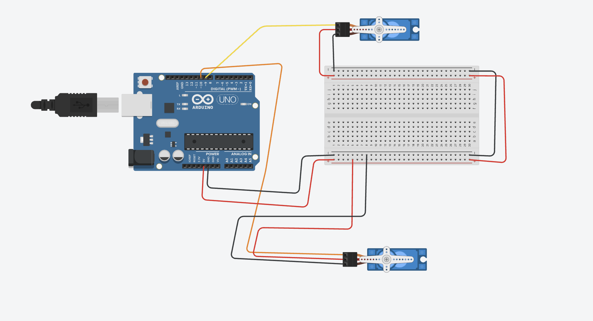

Guía de trabajo
Título de la práctica: Cabeza dinosaurio
Modalidad: Individual o por equipos
Duración estimada: 4 a 6 sesiones
Ajusta los ángulos de apertura y cierre según el mecanismo físico antes de presentar el proyecto.
Producto final identificado
Programar dos servomotores para controlar los ojos de una cabeza de dinosaurio, generando parpadeos naturales y un modo de alerta.
Objetivo 1: Investigar cómo ocurre un parpadeo natural
Descripción: Observar durante un tiempo breve cómo parpadean las personas o un personaje animado. Identificar cuánto dura un parpadeo y si los intervalos son siempre iguales.
Entrega: Registro de cinco parpadeos observados y tres conclusiones sobre duración, pausa y coordinación de ambos ojos.
Evaluación: Las conclusiones reconocen que el cierre es breve, los ojos trabajan coordinados y las pausas pueden variar.
Objetivo 2: Planear los movimientos de los ojos
Descripción: Definir los estados ojos abiertos, ojos cerrados, parpadeo natural y modo de alerta. Ordenar en una línea de tiempo las posiciones y pausas necesarias.
Entrega: Secuencia ilustrada de cada estado con posiciones y tiempos aproximados.
Evaluación: La secuencia distingue el parpadeo normal del modo de alerta y puede realizarse con dos servos.
Objetivo 3: Diseñar el mecanismo de dos servos
Descripción: Revisar el diagrama, identificar el ojo izquierdo y el derecho, y crear un boceto que muestre cómo cada servo moverá su párpado u ojo sin chocar con la estructura.
Entrega: Diagrama etiquetado y boceto frontal del mecanismo con el sentido de movimiento de cada servo.
Evaluación: Cada servo está asociado con el ojo correcto y el diseño deja espacio para abrir y cerrar sin forzar las piezas.
Objetivo 4: Calibrar cada servo por separado
Descripción: Conectar un servo a la vez y probar ángulos pequeños hasta encontrar una posición abierta y una cerrada segura para cada ojo.
Entrega: Tabla con los ángulos abierto y cerrado del ojo izquierdo y del ojo derecho.
Evaluación: Los cuatro valores fueron probados, no fuerzan el mecanismo y permiten distinguir claramente ojos abiertos y cerrados.
Objetivo 5: Programar el parpadeo natural
Descripción: Coordinar ambos servos para cerrar y abrir los ojos. Probar diferentes duraciones e intervalos hasta obtener un movimiento breve y natural.
Entrega: Video de tres parpadeos y registro de la duración de cierre elegida.
Evaluación: Ambos ojos completan el movimiento, regresan a la posición abierta y los intervalos variables evitan un ritmo mecánico repetitivo.
Objetivo 6: Integrar y distinguir el modo de alerta
Descripción: Probar la secuencia de parpadeo desfasado y el modo de alerta. Comparar su ritmo con el parpadeo natural para asegurar que comuniquen comportamientos diferentes.
Entrega: Video comparativo con un parpadeo natural y una ejecución del modo de alerta.
Evaluación: Las dos secuencias son visibles, distintas y terminan con los ojos en una posición correcta.
Objetivo 7: Mejorar sincronización y montaje
Descripción: Colocar los servos en la cabeza, observar roces o diferencias entre ambos ojos y ajustar ángulos o tiempos sin cambiar las funciones del proyecto.
Entrega: Lista de ajustes realizados y prueba continua de al menos cinco parpadeos más un modo de alerta.
Evaluación: El mecanismo no se atora, los servos no se fuerzan y ambos ojos conservan movimientos coordinados y repetibles.
Materiales
- 1 Arduino Uno
- 2 servomotores SG90 o similares
- Mecanismo de párpados u ojos
- Fuente de 5V para servos si el montaje lo requiere
- Protoboard
- Cables Dupont
Descripción general
La práctica controla dos servos conectados a los mecanismos de los ojos. El programa mantiene los ojos abiertos y cada cierto tiempo ejecuta un parpadeo, variando el intervalo para que el movimiento se perciba más natural.
Explicación del funcionamiento
El programa usa la librería Servo para posicionar cada ojo. Con millis se revisa si ya pasó el intervalo de parpadeo; cuando se cumple, los servos cierran y abren los ojos. Después se genera un nuevo intervalo aleatorio.
Espacio para diagrama
Al subir el archivo del diagrama con este nombre, se mostrará automáticamente en esta sección.

Código completo
#include <Servo.h>
// Pines de los servos
const int PIN_OJO_IZQ = 9;
const int PIN_OJO_DER = 10;
// Servos
Servo ojoIzq;
Servo ojoDer;
// Ajusta estos valores según tu mecanismo
const int IZQ_ABIERTO = 30;
const int IZQ_CERRADO = 95;
const int DER_ABIERTO = 150;
const int DER_CERRADO = 85;
// Tiempos
unsigned long tiempoAnterior = 0;
unsigned long intervaloParpadeo = 4000;
void setup() {
ojoIzq.attach(PIN_OJO_IZQ);
ojoDer.attach(PIN_OJO_DER);
abrirOjos();
delay(1000);
}
void loop() {
unsigned long tiempoActual = millis();
if (tiempoActual - tiempoAnterior >= intervaloParpadeo) {
tiempoAnterior = tiempoActual;
parpadeoNatural();
intervaloParpadeo = random(3000, 7000);
}
}
// ---------------- FUNCIONES ----------------
void abrirOjos() {
ojoIzq.write(IZQ_ABIERTO);
ojoDer.write(DER_ABIERTO);
}
void cerrarOjos() {
ojoIzq.write(IZQ_CERRADO);
ojoDer.write(DER_CERRADO);
}
void parpadeoNatural() {
cerrarOjos();
delay(180);
abrirOjos();
}
void parpadeoDesfasado() {
ojoIzq.write(IZQ_CERRADO);
delay(120);
ojoDer.write(DER_CERRADO);
delay(160);
ojoIzq.write(IZQ_ABIERTO);
delay(100);
ojoDer.write(DER_ABIERTO);
}
void modoAlerta() {
abrirOjos();
delay(300);
parpadeoDesfasado();
delay(300);
parpadeoDesfasado();
}Producto final
Descripción: Mecanismo de ojos con dos servomotores que realiza parpadeos naturales y un modo de alerta en una cabeza de dinosaurio.
Entrega:
- Enlace de Drive con video del mecanismo, el parpadeo natural y el modo de alerta.
- Enlace de Tinkercad del circuito y código, si se realizó en simulador.
- Documento o texto en Drive con la tabla de ángulos usados para cada ojo.
- Los enlaces deben permitir acceso a cualquier persona que los tenga.
Evaluación: Los ojos abren y cierran sin forzar el mecanismo, el parpadeo usa intervalos variables, el modo de alerta se distingue y los ángulos finales están registrados.
Preguntas de reflexión
Enviar proyecto
Antes de enviar, verifica que los siete objetivos estén completos y que al menos un enlace de Tinkercad o Drive funcione sin solicitar permiso.
Inicia sesión con Google para habilitar el envío.